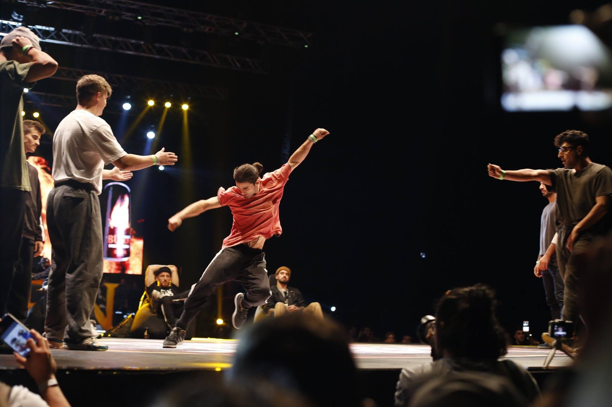
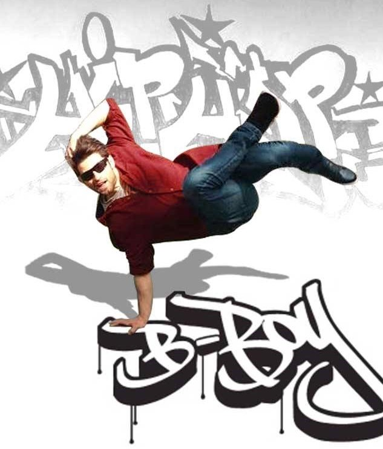

Breaking - Powermove - Flow

Breaking
Breaking, "sokak dansı" olarak da bilinen bir dans türüdür.
2011 yilinda profesyonel Dansci olmaya karar verdigimden beri kendimi surekli gelistirmekteyim.
Breakingin bana verdigi sinirsiz ozgurluk ve haraket kabileyetlerimi gelsitirmek icin hergun antreman yapmaktayim.
Antremanlarim Chill training - Hardcore training - Soul training olarak 3 kisima ayrilmaktadir

Dansim Originalty , Blow up powermove ve flow bilesenlerinden olusmaktadir.Bu nedenle Hergun powermoveve ve tricks antremanlarinin yani sira flow ve original style uzerine denemeler yapmaktayim.
Sahne ismim olarak Bboy Jashin'i kullanmaktayim.Anlami ise japonyada bir olumsuzluk tanrisinin ismidir.
2014 yilindan beri Drunk Steps Crew Family ile birlikte antreman yapip yarismalara katilmaktayim
Battle dedigimiz Breaking yarismalarinda hem ulusal hem uluslararasi yarismalarada katilarak dereceler yapmaktayim
Derece yaptigim yarislar
Blow Up CIRCLE (2020) - 1st place
Heads Or Tails (2018) - 1st place
Break the Batlle 3th Press(2017) - 2nd place
BURN HIPHOP IS BACK 2 (2017) - 3th place
Power Rangers Battle vol.2 (2016) - 1st place
Old City Jam (2015) - 3th place
Bboy's Anadolu Jam vol.4 (2015) - 3th place